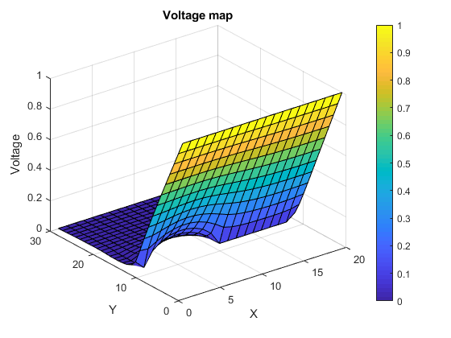
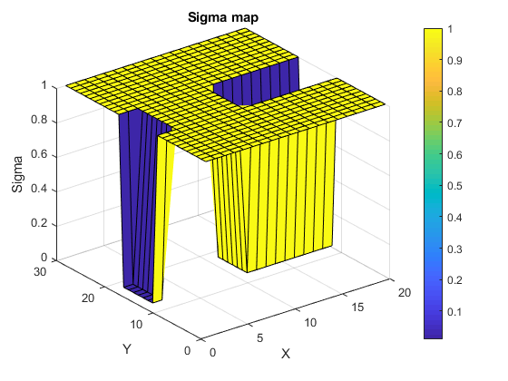
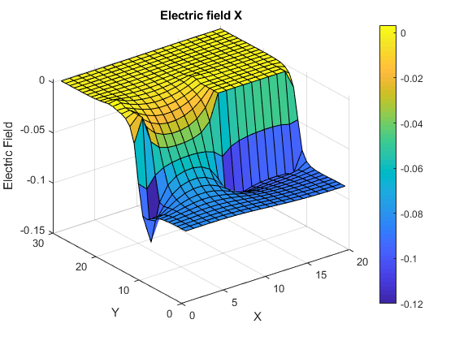
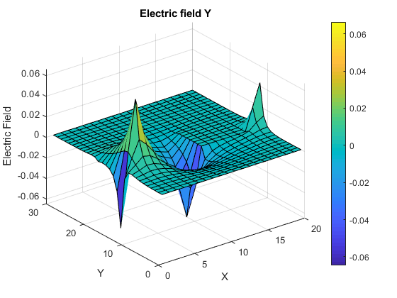
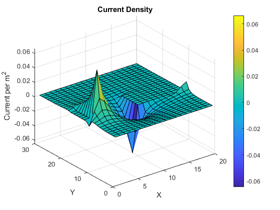

global C;
C.q_0 = 1.60217653e-19;
C.hb = 1.054571596e-34;
C.h = C.hb * 2 * pi;
C.m_0 = 9.10938215e-31;
C.kb = 1.3806504e-23;
C.eps_0 = 8.854187817e-12;
C.mu_0 = 1.2566370614e-6;
C.c = 299792458;
W = 20;
L = W*3/2;
mid_x = L/2;
mid_y = W/3;
G = zeros(L*W,L*W);
B = zeros(L*W,1);
s1 = 1;
s2 = 0.01;
res_L = L*1/4;
res_W = W*2/5;
Smap = ones(L,W);
for i = 1:1:L
for j = 1:1:W
n = j+(i-1)*W;
nxm = j+(i-2)*W;
nxp = j+i*W;
nyp = j+1+ (i-1)*W;
nym = j-1+ (i-1)*W;
if(i == 1)
G(n,:) = 0;
G(n,n) = 1;
B(n) = 1;
Smap(i,j) = s1;
elseif(i == L)
G(n,:) = 0;
G(n,n) = 1;
B(n) = 0;
Smap(i,j) = s1;
elseif(j == 1)
G(n,:) = 0;
if(i > mid_x - (res_L/2) && i < mid_x + (res_L/2))
G(n,nxm) = s2;
G(n,nxp) = s2;
G(n,nyp) = s2;
G(n,n) = -3*s2;
Smap(i,j) = s2;
else
G(n,nxm) = s1;
G(n,nxp) = s1;
G(n,nyp) = s1;
G(n,n) = -3;
Smap(i,j) = s1;
end
elseif(j == W)
G(n,:) = 0;
if(i > mid_x - (res_L/2) && i < mid_x + (res_L/2))
G(n,nxm) = s2;
G(n,nxp) = s2;
G(n,nym) = s2;
G(n,n) = -3*s2;
Smap(i,j) = s2;
else
G(n,nxm) = s1;
G(n,nxp) = s1;
G(n,nym) = s1;
G(n,n) = -3;
Smap(i,j) = s1;
end
else
G(n,:) = 0;
G(n,n) = -4;
if((i > mid_x -(res_L/2) && i < mid_x + (res_L/2)) && ...
(j > mid_y + (res_W/2) || j < mid_y -(res_W/2)))
G(n,nxp) = s2;
G(n,nxm) = s2;
G(n,nyp) = s2;
G(n,nym) = s2;
Smap(i,j) = s2;
else
G(n,nxp) = s1;
G(n,nxm) = s1;
G(n,nyp) = s1;
G(n,nym) = s1;
Smap(i,j) = s1;
end
end
end
end
V = G\B;
Vmap = zeros(L,W);
for i =1:1:L
for j = 1:1:W
n = j+(i-1)*W;
Vmap(i,j) = V(n);
end
end
[Ey,Ex] = gradient(Vmap);
E = gradient(Vmap);
J = Smap.*E;
figure(5)
surf(Vmap)
colorbar
title('Voltage map')
xlabel('X')
ylabel('Y')
zlabel('Voltage')
figure(6)
surf(Smap)
colorbar
title('Sigma map')
xlabel('X')
ylabel('Y')
zlabel('Sigma');
figure(7)
surf(Ex)
colorbar
title('Electric field X')
xlabel('X')
ylabel('Y')
zlabel('Electric Field');
figure(8)
surf(Ey)
colorbar
title('Electric field Y')
xlabel('X')
ylabel('Y')
zlabel('Electric Field');
figure(9)
surf(J)
colorbar
title('Current Density')
xlabel('X')
ylabel('Y')
zlabel('Current per m^2');
    